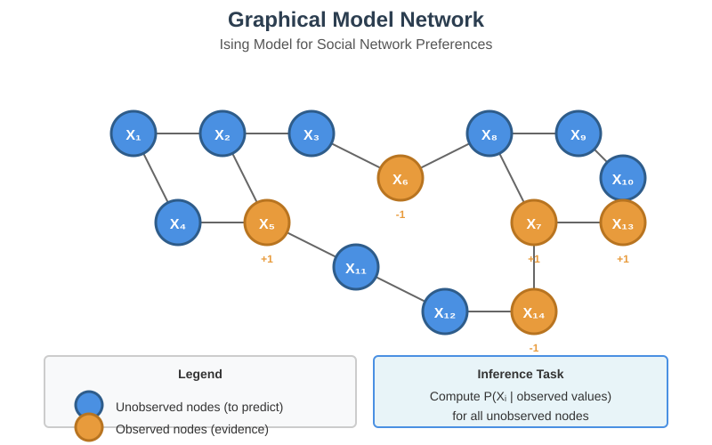
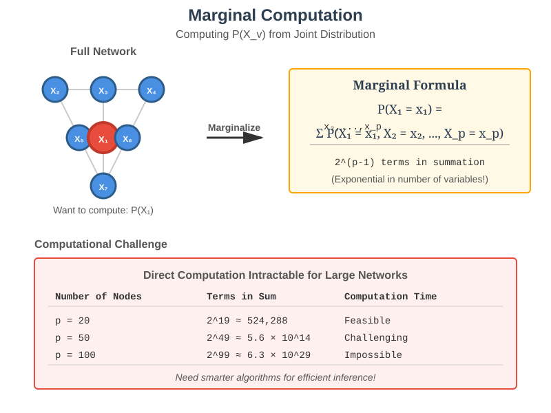
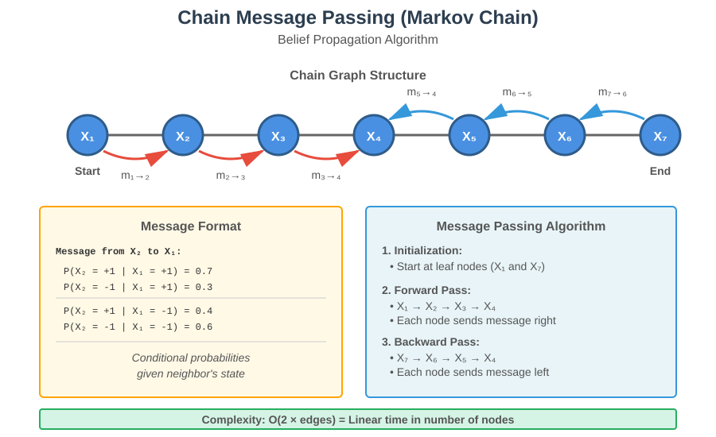
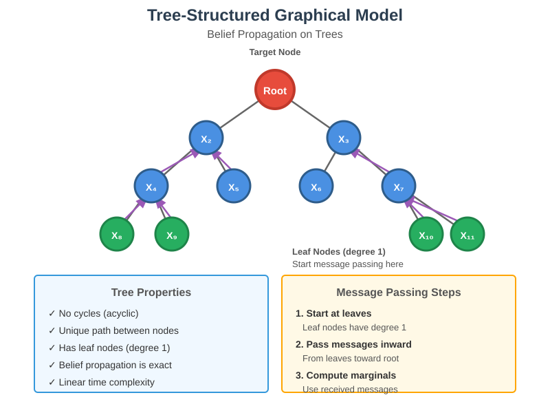
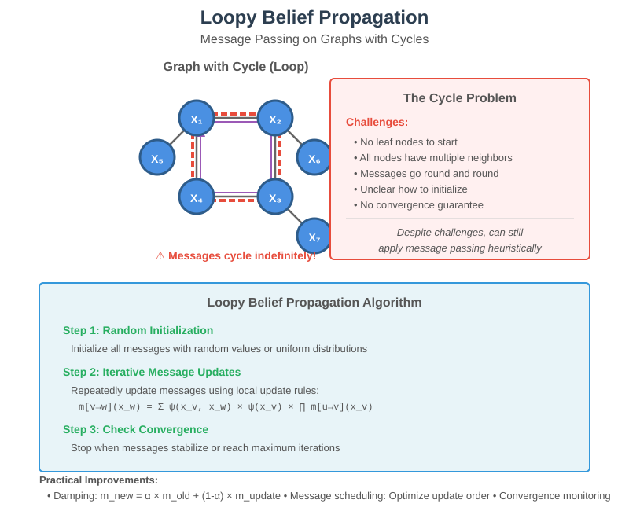
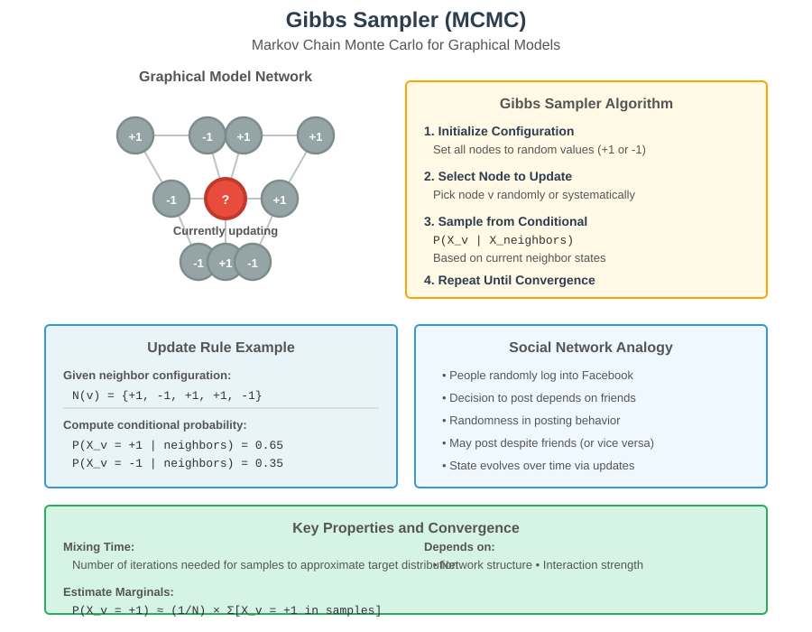

Inference in Graphical Models
📋 Quick Navigation
- Introduction to Inference
- Computing Marginals
- Message Passing Algorithms
- Belief Propagation on Trees
- Loopy Belief Propagation
- MCMC Methods
- Variational Methods
- Practical Implementation
- References & Further Reading
🎯 Introduction to Inference
Graphical models provide flexible and powerful frameworks for modeling complex systems and networks. Once we have learned a model from data or specified it using domain knowledge, we can use various fast algorithms to make predictions and compute statistical quantities of interest.

Key Applications:
- Prediction: Estimating unobserved node values based on observed data
- Recommendation Systems: Predicting user preferences in social networks
- Network Analysis: Understanding propagation effects and dependencies
- Statistical Inference: Computing posterior distributions and marginals
Example Use Case:
Consider a university social network where we model YouTube video ratings (like/dislike) using an Ising model. When a new video is released and 15 people have rated it, we want to predict ratings for users who haven't seen it yet. The graphical model captures statistical interactions between variables and tells us how to combine observed information for prediction.
Core Problem:
The fundamental computational task in graphical models is computing the marginal distribution at individual nodes. This involves:
- Computing probability distributions at specific nodes
- Incorporating observed evidence from other nodes
- Handling network effects and dependencies
- Scaling efficiently to large networks
📊 Computing Marginals
The marginal at a node V represents the probability distribution of variable X_v, essentially describing what we observe when focusing on node V while ignoring all other nodes in the network.

Mathematical Definition:
P(X_v = x_v)
This represents the probability distribution at node v, where:
- X_v is the random variable at node v
- x_v represents possible values (e.g., +1 or -1 in Ising models)
Computing Marginals via Summation:
For a network with p nodes, the marginal at node 1 is:
P(X_1 = 1) = Σ P(X_1 = 1, X_2 = x_2, ..., X_p = x_p)
Where:
- The summation is over all possible values of X_2 through X_p
- Each variable takes values +1 or -1
- This results in 2^(p-1) terms in the summation
Computational Challenge:
The exponential dependence on p makes direct computation infeasible for most practical situations. For example:
- 20 nodes: 2^19 ≈ 524,000 terms
- 50 nodes: 2^49 ≈ 562 trillion terms
- 100 nodes: 2^99 ≈ 6.3 × 10^29 terms
Computational Complexity:
Unfortunately, computing marginals in general Ising models is computationally hard in a strong theoretical sense. However, restricted classes of models admit efficient algorithms that work well in practice.
Incorporating Observations:
To compute posterior distributions given observations:
- Fix observed variables in the model to their observed values
- Create a new Ising model on the remaining unobserved nodes
- Compute marginals in this modified model
- The resulting marginals represent the posterior probabilities we seek
Key Insight:
Computing the posterior distribution at a node given observations reduces to computing the marginal in a modified graphical model. This unification allows us to focus on efficient marginal computation algorithms.
🔄 Message Passing Algorithms
For graphical models with special structures (chains, trees), we can compute marginals efficiently using message passing algorithms based on dynamic programming principles.

Chain Structure (Markov Chain):
Consider a graphical model with a path or chain structure. This special case allows for efficient computation through the Global Markov Property: when we condition on an arbitrary node, variables to the right are conditionally independent of variables to the left.
Message Passing Protocol:
Each node passes messages to its neighbors containing conditional probability information:
Message from node 2 to node 1:
- P(X_2 = +1 | X_1 = +1) = 0.7
- P(X_2 = -1 | X_1 = +1) = 0.3
- P(X_2 = +1 | X_1 = -1) = 0.4
- P(X_2 = -1 | X_1 = -1) = 0.6
Computing Marginals from Messages:
Let q = P(X_1 = +1). Using the law of total probability:
P(X_2 = +1) = P(X_2 = +1 | X_1 = +1) × P(X_1 = +1) + P(X_2 = +1 | X_1 = -1) × P(X_1 = -1)
= 0.7q + 0.4(1-q)
= 0.4 + 0.3q
Applying Bayes' Rule:
To find q, we use:
P(X_1 = +1 | X_2 = +1) = P(X_2 = +1 | X_1 = +1) × P(X_1 = +1) / P(X_2 = +1)
= 0.7q / (0.4 + 0.3q)
Message Computation Rule:
A node v can compute its outgoing message along an edge once it has received incoming messages from all other edges. This process:
- Starts at leaf nodes (degree one) that have only one adjacent edge
- Propagates across the chain as each node receives necessary messages
- Completes when all nodes have received messages from neighbors
Computational Efficiency:
- Total messages: 2 × (number of edges)
- Computation time: Linear in the number of nodes
- Each message: Contains conditional probabilities for all variable states
Computing Node Marginals:
Each node can compute its marginal once it receives messages from both neighbors using Bayes' rule to combine the information.
🌲 Belief Propagation on Trees
The belief propagation algorithm naturally extends from chains to tree-structured graphical models, providing exact marginal computation for any tree topology.

Tree Definition:
A tree is a connected graph with no cycles. Key properties:
- Leaf nodes: Nodes of degree one (analogous to chain endpoints)
- Hierarchical structure: Natural parent-child relationships
- Unique paths: Exactly one path between any two nodes
- No loops: Eliminates circular dependencies
Belief Propagation Algorithm:
The same message passing algorithm from chains works on trees:
- Initialization: Start at leaf nodes (degree one)
- Message computation: Each node computes outgoing messages once all incoming messages (except from the target neighbor) are received
- Propagation: Messages flow from leaves toward the center and back
- Marginal computation: Each node computes its marginal using messages from all neighbors
Message Structure:
Messages take the form of conditional probabilities:
Message from node u to node v:
- P(X_u = +1 | X_v = +1)
- P(X_u = -1 | X_v = +1)
- P(X_u = +1 | X_v = -1)
- P(X_u = -1 | X_v = -1)
Max-Product Algorithm:
For finding the maximum probability assignment (MAP), use a variant called max-product:
Message structure:
"If you are +1, then in the maximum probability assignment, I'm -1"
"If you are -1, then in the maximum probability assignment, I'm +1"
Algorithm Properties:
- Correctness: Produces exact marginals for tree-structured models
- Efficiency: Linear time complexity in number of nodes
- Distributed: Can be implemented in parallel/distributed systems
- Historical: Appeared in statistical physics, ML, and AI under various names
Handling Observations:
To incorporate observed node values:
- Create a modified graphical model with observed nodes fixed
- Run belief propagation on the modified model
- Resulting marginals represent posterior probabilities
🔁 Loopy Belief Propagation
When the graphical model contains cycles (loops), belief propagation becomes more complex but can still be applied heuristically with good practical performance.

The Challenge of Cycles:
Cycles create problems for belief propagation:
- No natural starting point: All nodes have multiple neighbors (no leaves)
- Circular dependencies: Messages can cycle indefinitely
- Convergence issues: No guarantee of reaching correct answer
- Initialization ambiguity: Unclear how to start the algorithm
Loopy Belief Propagation (LBP):
Despite theoretical challenges, we can run belief propagation on graphs with cycles:
Algorithm:
- Random initialization: Start with random messages at all edges
- Iterative updates: Apply local update rules repeatedly
- Convergence check: Run until messages stabilize or max iterations reached
- Extract marginals: Use converged messages to estimate node marginals
Local Update Rule:
Each node v computes a message to neighbor w once messages from all other neighbors have arrived (or been initialized):
m_v→w(x_w) = Σ_x_v ψ(x_v, x_w) ψ(x_v) ∏_{u ∈ N(v)\{w}} m_u→v(x_v)
Where:
- m_v→w is the message from v to w
- ψ(x_v, x_w) is the edge potential
- ψ(x_v) is the node potential
- N(v){w} represents neighbors of v excluding w
Practical Improvements:
Several heuristics improve LBP stability and performance:
- Damping factors: Smooth message updates to prevent oscillation
- Message scheduling: Careful ordering of message updates
- Convergence criteria: Monitoring message changes and setting thresholds
- Initialization strategies: Using problem-specific knowledge
Performance Characteristics:
- Often works well: Despite lack of guarantees, frequently produces good approximations
- Fast execution: Scales to large networks
- Distributed implementation: Naturally parallelizable
- No guarantees: May not converge or converge to incorrect values
When to Use LBP:
- Dense graphs where exact inference is intractable
- Large-scale networks requiring fast approximate inference
- Applications where approximate marginals are sufficient
- Problems where empirical performance is good despite theory
🎲 MCMC Methods
Markov Chain Monte Carlo (MCMC) methods provide an alternative approach to inference by generating samples from the joint distribution, which can then be used to estimate marginals and other statistical quantities.

Core Idea:
If we can generate independent samples from the joint distribution described by the graphical model, we can easily estimate marginals and other statistical quantities by empirical averaging.
Example: Estimating Marginals
For a node v with marginal probability q = P(X_v = +1):
Estimate q ≈ (1/N) × (number of times X_v = 1 in N samples)
This is analogous to estimating coin bias by flipping it many times and averaging the results.
Gibbs Sampler:
A simple Markov chain for generating samples:
Algorithm:
- Initialize: Start with arbitrary configuration (e.g., all +1 or random)
- Sequential updates: Pick a node v randomly or systematically
- Conditional sampling: Update X_v based on its neighbors' current states
- Iteration: Repeat step 2-3 many times
- Sampling: Periodically record the current state as a sample
Update Rule for Node v:
P(X_v = +1 | X_neighbors) = f(current neighbor states, model parameters)
Sample X_v from this conditional distribution.
Social Network Analogy:
Think of people randomly logging into Facebook:
- People decide to post based on friends' posting behavior
- There's randomness: might not post even if many friends did
- Conversely, might post regardless with something important to share
- Each person's decision depends on neighbors' states plus randomness
Convergence and Mixing Time:
The key question is: How many iterations before samples approximate the target distribution?
Mixing time depends on:
- Network structure: Dense vs. sparse connections
- Interaction strength: Strong vs. weak edge weights
- Temperature: High vs. low temperature in the model
- Starting configuration: Random vs. structured initialization
Mathematical Property:
After sufficiently many updates (mixing time), taking a snapshot of the configuration produces a sample from the desired joint distribution.
Practical Considerations:
Advantages:
- Easy to implement
- Works for any graphical model structure
- Guaranteed to give accurate answers given sufficient time
- Good first method to try for complex models
Disadvantages:
- Can be very slow (long mixing time)
- Requires many samples for accurate estimates
- Difficult to diagnose convergence
- May get stuck in local modes
Estimation Process:
- Burn-in: Run chain for mixing time, discard early samples
- Sampling: Continue running and periodically save states
- Estimation: Compute empirical statistics from saved samples
- Verification: Check convergence using multiple runs
Advanced MCMC Methods:
- Metropolis-Hastings: More general proposal mechanisms
- Hamiltonian Monte Carlo: Uses gradient information for better proposals
- Parallel tempering: Runs multiple chains at different temperatures
- Adaptive MCMC: Adjusts proposal distribution during sampling
📐 Variational Methods
Variational methods provide faster alternatives to MCMC by approximating the true model with a simpler one and performing exact computations on the approximation.
Core Principle:
Replace the true distribution with a simpler distribution Q that is:
- Tractable: Easy to compute with
- Close: Minimizes a distance measure to the true distribution
- Structured: Has desirable independence properties
Mean-Field Variational Bayes:
The most common variational approach approximates the true distribution with one that minimizes the Kullback-Leibler (KL) divergence.
Optimization Problem:
Q* = argmin_Q KL(Q || P)
Where:
- P is the true distribution from the graphical model
- Q is the approximating distribution (typically factorized)
- KL is the Kullback-Leibler divergence
Mean-Field Approximation:
Assume complete factorization:
Q(X_1, ..., X_p) = ∏_{i=1}^p Q_i(X_i)
This assumes all variables are independent under Q (hence "mean-field").
Algorithm:
- Initialize: Start with initial Q
- Coordinate descent: Update each Q_i while fixing others
- Fixed-point iteration: Repeat until convergence
- Extract estimates: Use Q to approximate marginals and other quantities
Advantages of Variational Methods:
- Speed: Often much faster than MCMC
- Deterministic: No random sampling, reproducible results
- Scalability: Can handle very large models
- Convergence: Clear convergence criteria
Limitations:
- Approximation quality: KL divergence may not capture all important features
- Local optima: Coordinate descent may get stuck
- Underestimates uncertainty: Typically produces overconfident estimates
- Model mismatch: Strong independence assumptions may be poor fit
Comparison: MCMC vs. Variational:
| Aspect | MCMC | Variational |
|---|---|---|
| Accuracy | Exact (given time) | Approximate |
| Speed | Slow | Fast |
| Convergence | Hard to diagnose | Clear criteria |
| Scalability | Limited | Excellent |
| Implementation | Simple | Complex |
| Uncertainty | Accurate | Underestimated |
When to Use Variational Methods:
- Large-scale problems where MCMC is too slow
- Applications requiring fast inference at test time
- Problems where approximate marginals are sufficient
- Situations with limited computational budget
Advanced Variational Techniques:
- Structured variational inference: Beyond mean-field
- Variational EM: For models with latent variables
- Black-box variational inference: Using stochastic optimization
- Amortized inference: Learning inference networks (e.g., VAEs)
💻 Practical Implementation
Algorithm Selection Guide:
For Tree-Structured Models:
- Use: Belief propagation (exact and efficient)
- Complexity: O(nodes)
- Accuracy: Exact marginals
For Models with Few Cycles:
- Use: Loopy belief propagation
- Complexity: O(iterations × edges)
- Accuracy: Often good approximation
- Tuning: Adjust damping and convergence criteria
For General Models (Moderate Size):
- Use: MCMC (Gibbs sampling)
- Complexity: O(samples × nodes)
- Accuracy: Exact as samples → ∞
- Tuning: Monitor convergence, run multiple chains
For Large-Scale Models:
- Use: Variational methods
- Complexity: O(iterations × nodes)
- Accuracy: Approximate but fast
- Tuning: Choose approximation family carefully
Implementation Considerations:
Numerical Stability:
- Work in log-space to avoid underflow
- Normalize messages regularly
- Use stable versions of Bayes' rule
Convergence Monitoring:
- Track message changes in belief propagation
- Use multiple chains for MCMC
- Monitor objective function in variational methods
Performance Optimization:
- Cache repeated computations
- Parallelize independent operations
- Use sparse representations for large graphs
- Implement efficient message scheduling
Software Recommendations:
Python Libraries:
- pgmpy: Probabilistic graphical models
- PyMC: Bayesian inference with MCMC
- Edward/TensorFlow Probability: Variational inference
- NetworkX: Graph structure manipulation
Julia Packages:
- Turing.jl: Probabilistic programming
- LightGraphs.jl: Graph algorithms
- Gen.jl: Probabilistic programming with inference
📚 References & Further Reading
Foundational Papers:
- Pearl, J. (1988). "Probabilistic Reasoning in Intelligent Systems" - Classic text on belief propagation and graphical models
- Yedidia, Freeman, & Weiss (2003). "Understanding Belief Propagation and Its Generalizations" - Comprehensive survey of message passing algorithms
- Wainwright & Jordan (2008). "Graphical Models, Exponential Families, and Variational Inference" - Detailed treatment of variational methods
Recent Advances:
- Kolmogorov & Rother (2007). "Minimizing Nonsubmodular Functions with Graph Cuts" - Advanced inference techniques
- Minka (2001). "Expectation Propagation for Approximate Bayesian Inference" - Alternative to belief propagation
- Hoffman et al. (2013). "Stochastic Variational Inference" - Scalable variational inference
Textbooks:
- Koller & Friedman (2009). "Probabilistic Graphical Models: Principles and Techniques" - Comprehensive reference
- Murphy (2012). "Machine Learning: A Probabilistic Perspective" - Accessible introduction with practical focus
Online Resources:
- Stanford CS228: Probabilistic Graphical Models course materials
- Probabilistic Programming & Bayesian Methods for Hackers: Interactive tutorials
- ArXiv cs.LG: Latest research papers on graphical model inference
Computational Tools:
- LibDAI: C++ library for discrete approximate inference
- Infer.NET: Microsoft Research inference framework
- Stan: Modern Bayesian inference platform
Document Information:
- Topic: Inference in Graphical Models
- Level: Advanced undergraduate / Graduate
- Prerequisites: Probability theory, graph theory, basic algorithms
- Applications: Machine learning, computer vision, computational biology, social network analysis
Related Topics:
- Graphical model structure learning
- Hidden Markov models
- Conditional random fields
- Bayesian networks
- Factor graphs